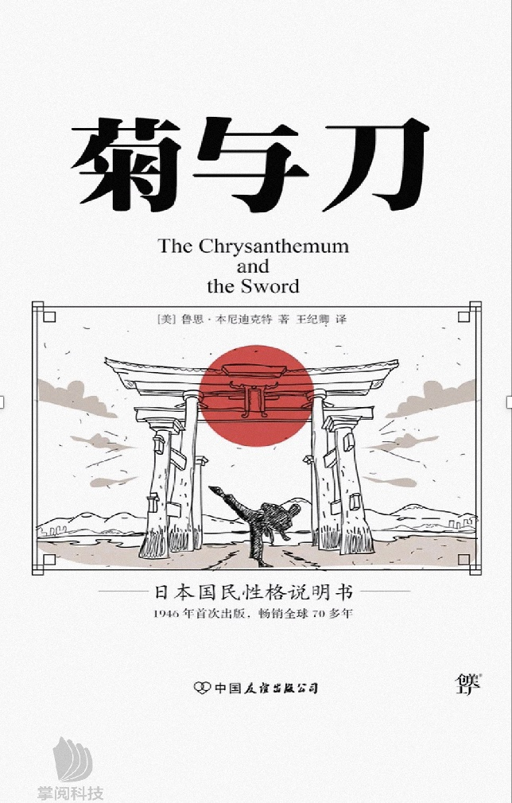

见证这段历史，从此仰望星空不再没有意义

确实是这样，以这本书宏大的时空跨度，你会发现自己实在是太渺小了
在时间面前一切都会被打败
尤其是到最后一部分。我以为看完会看开很多，然而并没有什么卵用。生活是自己的时间在宇宙中很快，但于我们个人依然无限漫长，眼光还是要从远方的田野收回到眼前的苟且
像那句话，大道理都懂，小情绪却难以控制

列那狐

列那狐聪明机智，左右逢源
它对于比自己强大许多的狮、狼、熊，没有害怕，而是凭借自己的智慧与它们周旋我印象最深的是有一次它被猎人追杀, 躲进城堡中， 猎人翻遍了城堡也没有发现它的踪迹。 结果列那狐把自己伪装成第十张狐皮， 挂在了墙上

如果善恶有一条分界线，当在向的恶跨出一步时，就已经无法回头，只能终身在白夜的阴影处徘徊。但是即便社会险恶，恶人狡诈，也希望能够永远保持一颗纯真的心，能永远对世界充满希望，能永远坦坦荡荡，能寻求到自己的太阳，并且永远走在自己的太阳照耀下


《三国》实是叫人有进取之心

三国初期各路诸侯人才星光闪耀，众人都渴望建功立业，经历刘备曹操这一代人之后，三足鼎立之势实已形成，到第二代诸葛亮，陆逊，司马懿等人，基本上没有动摇国本的战争，都是在边境上打来打去。此时无论关兴还是张苞，诸葛恪还是陆抗，曹真或者夏侯尚，文人才的吸收和任用大不如前。到诸葛瞻，司马昭，邓艾、钟会这一代，人才已很难尽其用，给人一种一代不如一代之感
刘曹孙三人打下的江山最后却被司马家窃取，晋朝的基本盘是曹操打下来的，曹家对司马氏不薄，委以重任，司马懿偏偏反了，靠着儿子孙子连着自己三代人的努力终享有天下，但在道义上比曹丕篡汉还要恶劣
老人读此书，也会感悟自己已到将死之年却依旧功业未成，志向未达，而生出落寞伤悲、悔当初的感觉
《菊与刀》
